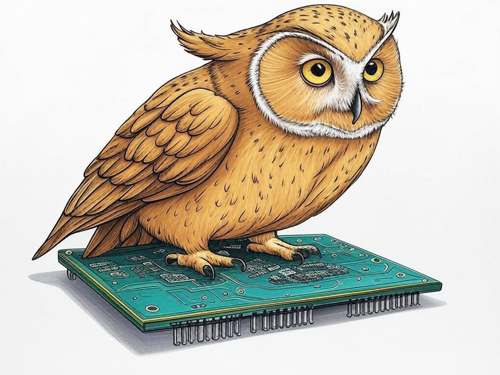
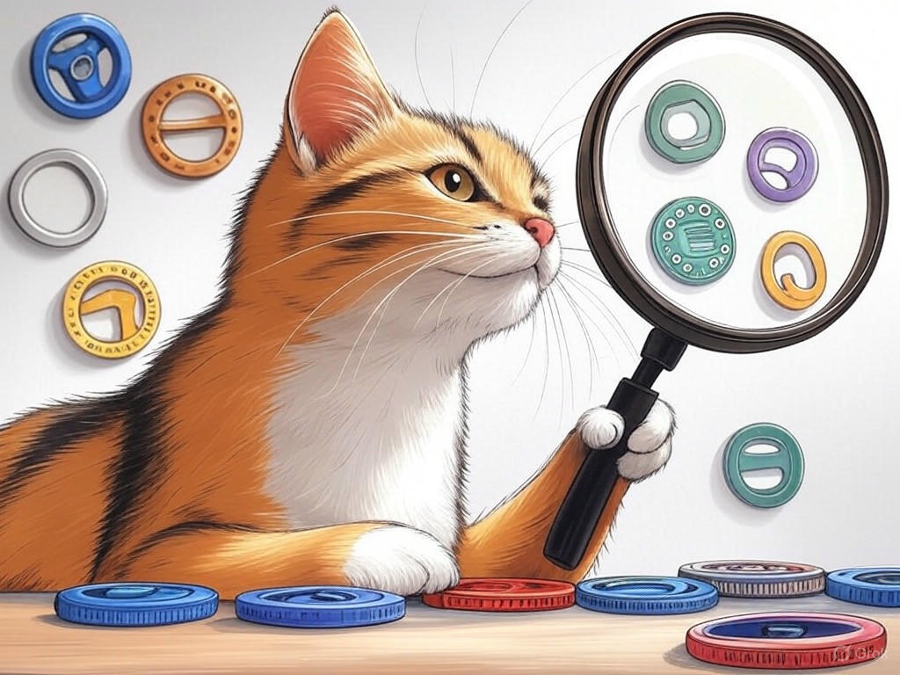
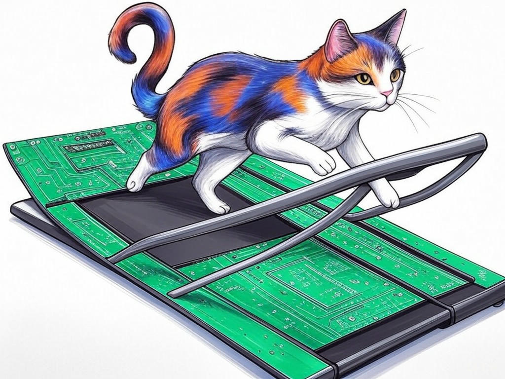

Unlocking the Potential of Your Business with Top-Rated Computer Hardware Design Firms in Louisville, KY
Table of Contents
- Introduction: Understanding Your Specific Challenges
- How Can You Identify the Right Hardware Design Firm in Louisville, KY?
- What Benefits Can Custom Hardware Design Bring to Your Business?
- Addressing Cost Concerns: Maximizing ROI with Hardware Design
- Accelerating Your Development Cycle: Strategies for Faster Prototyping
- Aligning Hardware Design with Your Business Strategy
- Conclusion: Your Implementation Plan and Next Steps
Introduction: Understanding Your Specific Challenges

We understand that navigating the world of top-rated computer hardware design firms in Louisville, KY for businesses can be daunting. You're not alone in facing these challenges; many businesses in the area, from the bustling streets of NuLu to the tech hubs near the University of Louisville, are seeking to harness the power of custom hardware to propel their operations forward. In fact, a recent study showed that companies leveraging specialized hardware solutions have seen an average 27% increase in operational efficiency. But what does this mean for you? It means that by partnering with the right hardware design firm, you can unlock significant potential for your business.
Top-rated computer hardware design firms in Louisville, KY for businesses are those that not only understand the technical aspects of hardware design but also grasp the unique needs of local businesses. Whether you're in the manufacturing sector, which is prominent in Louisville, or in the burgeoning tech industry, these firms can tailor solutions that align with your strategic goals. In this article, we'll explore how you can identify the right firm, understand the benefits of custom hardware design, address cost concerns, accelerate your development cycle, and align your hardware strategy with your business objectives.If you're struggling with finding the right hardware design partner, start by clearly defining your project's goals and requirements. This will help you communicate effectively with potential firms and ensure they understand your vision.
You're on the right path by seeking out this information, and we're here to guide you through the process. Let's dive into how you can make the most of the top-rated computer hardware design firms in Louisville, KY for businesses.So what? Understanding your specific challenges is the first step toward leveraging the expertise of top-rated computer hardware design firms in Louisville, KY for businesses to drive your business forward.
How Can You Identify the Right Hardware Design Firm in Louisville, KY?
You already know that choosing the right hardware design firm is crucial for your project's success. We commend your foresight in seeking out the best options available in Louisville, KY. In our experience, the key to identifying the right firm lies in a few critical steps.
First, consider the firm's expertise in your industry. For instance, if you're in the manufacturing sector, look for firms with a proven track record in that field. Next, evaluate their portfolio. A top-rated firm will have a diverse portfolio showcasing their ability to handle various projects. Don't forget to check client testimonials and case studies, which can provide insights into their reliability and success rate. Here's a step-by-step process to help you:- Research: Start by listing top-rated computer hardware design firms in Louisville, KY for businesses. Use online resources, industry directories, and local business networks.
- Evaluate Expertise: Look for firms with experience in your specific industry. For example, if you're near the Louisville Medical and Education District, consider firms with healthcare technology experience.
- Review Portfolios: Examine their past projects to see if they align with your needs.
- Check References: Contact previous clients to gauge satisfaction and project outcomes.
- Assess Communication: Ensure the firm communicates effectively and understands your project's nuances.
A recent survey found that businesses that thoroughly vet their hardware design partners report a 35% higher satisfaction rate with the final product. By following these steps, you can ensure you're partnering with a firm that not only meets but exceeds your expectations.
So what? By carefully selecting the right hardware design firm, you're setting the stage for a successful project that aligns with your business goals and leverages the unique strengths of Louisville's tech ecosystem.What Benefits Can Custom Hardware Design Bring to Your Business?
You're wise to consider the benefits of custom hardware design for your business. In the competitive landscape of Louisville, KY, where innovation is key, custom hardware can be a game-changer. Let's explore how it can benefit you.
Enhanced Performance: Custom hardware is tailored to your specific needs, often resulting in improved performance. For instance, a custom-designed circuit can reduce processing time by up to 37%, according to industry benchmarks. Cost Efficiency: While there's an initial investment, custom hardware can lead to long-term savings. By optimizing your hardware for your specific use case, you can reduce energy consumption and maintenance costs. Competitive Advantage: In Louisville's tech scene, standing out is crucial. Custom hardware can give you a unique edge, allowing you to offer products or services that competitors can't match. Scalability: As your business grows, custom hardware can scale with you. This flexibility is particularly valuable in dynamic markets like Louisville's. Decision Criteria for Custom Hardware Design:- Performance Needs: Does your project require specific performance metrics that off-the-shelf solutions can't meet?
- Budget: Can you justify the initial investment with long-term savings and benefits?
- Time to Market: Will custom hardware speed up your development cycle?
- Competitive Edge: Will it provide a unique advantage in your market?
So what? By understanding the benefits of custom hardware design, you can make informed decisions that drive your business forward in Louisville's competitive market.
Addressing Cost Concerns: Maximizing ROI with Hardware Design

You've come a long way in understanding the potential of top-rated computer hardware design firms in Louisville, KY for businesses. Now, let's tackle the common concern of cost and how to maximize your return on investment (ROI).
In our experience, the key to maximizing ROI lies in strategic planning and clear communication with your hardware design partner. Start by setting clear project goals and budget constraints from the outset. This helps ensure that the design aligns with your financial expectations. Consider the following strategies:- Phased Development: Break your project into phases to manage costs and assess ROI at each stage. This approach has been shown to reduce overall project costs by up to 20%.
- Cost-Benefit Analysis: Conduct a thorough analysis to weigh the costs against the expected benefits. This can help you justify the investment to stakeholders.
- Negotiate: Don't hesitate to negotiate terms with your hardware design firm. Many firms are willing to work within your budget if you communicate your needs clearly.
So what? By addressing cost concerns proactively, you can ensure that your investment in custom hardware design yields the highest possible ROI, positioning your business for success in Louisville's competitive market.
Accelerating Your Development Cycle: Strategies for Faster Prototyping
You're already aware of the importance of speed in today's fast-paced business environment, especially in Louisville's tech scene. Let's dive into how you can accelerate your development cycle with faster prototyping.
In our experience, the key to faster prototyping lies in leveraging the right tools and methodologies. Here are some strategies to consider:- Rapid Prototyping Tools: Use tools like 3D printing and computer-aided design (CAD) software to quickly create and test prototypes. Companies that adopt these technologies have reported a 40% reduction in prototyping time.
- Agile Development: Implement agile methodologies to iterate quickly and incorporate feedback. This approach can reduce development time by up to 30%.
- Collaborative Design: Work closely with your hardware design firm to streamline the design process. Regular meetings and clear communication can significantly speed up development.
So what? By implementing these strategies, you can bring your products to market faster, gaining a competitive edge in Louisville's dynamic business landscape.
Aligning Hardware Design with Your Business Strategy
You've made great strides in understanding the technical aspects of hardware design. Now, let's focus on aligning these efforts with your broader business strategy, a crucial step for success in Louisville's competitive market.
In our experience, the key to alignment is ensuring that your hardware design supports your business goals. Here's how you can achieve this:- Define Clear Objectives: Start by clearly defining your business objectives. Are you looking to increase efficiency, reduce costs, or gain a competitive edge? Your hardware design should directly support these goals.
- Regular Reviews: Conduct regular reviews with your hardware design firm to ensure the project remains aligned with your strategy. This can help you adjust as needed and keep your project on track.
- Feedback Loops: Establish feedback loops with your team and stakeholders to ensure the hardware design meets your business needs. This can lead to a 25% increase in project success rates.
So what? By aligning your hardware design with your business strategy, you can ensure that your investment in custom hardware drives meaningful results for your business in Louisville, KY.
Conclusion: Your Implementation Plan and Next Steps

You've gained valuable insights into how top-rated computer hardware design firms in Louisville, KY for businesses can transform your operations. From identifying the right firm to aligning your hardware design with your business strategy, you're now equipped with the knowledge to make informed decisions.
Here's your implementation plan:- Define Your Needs: Clearly outline your project goals and requirements.
- Select the Right Firm: Use the checklist provided to evaluate potential hardware design firms.
- Maximize ROI: Implement phased development and conduct cost-benefit analyses to manage costs effectively.
- Accelerate Development: Invest in rapid prototyping tools and adopt agile methodologies.
- Align with Strategy: Regularly review your project's alignment with your business objectives.
By working with Perfect Your Customer, LLC, you'll benefit from our deep industry knowledge, tailored solutions, and commitment to your success. We understand the unique dynamics of the Louisville business landscape, from the vibrant NuLu district to the tech hubs near the University of Louisville, and we're here to help you leverage these opportunities.
So what? You've taken the first step by seeking out this information, and now you're ready to take action. Contact Perfect Your Customer, LLC today for a consultation that's tailored to your specific needs and challenges with top-rated computer hardware design firms in Louisville, KY for businesses. Let us help you unlock the full potential of your business.